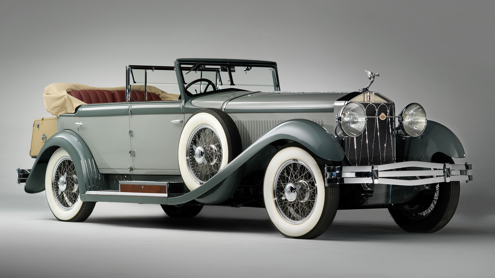

Used and Old
Classic Oldtimers are the best considering its rearity
| Car | Engine | YOM | Car brand | Sale |
|---|---|---|---|---|
| Bently Blower | 6.75 L n\a | 1936-1940 | Wired spoke Wheels | Auction |
| Car | Engine | YOM | Car brand | Sale |
|---|---|---|---|---|
| Ferrari 250-GTO | 8 L n\a | 1965-1978 | Wired spoke Wheels | Auction |
The Ferrari 250 GTO is a GT car produced by Ferrari from 1962 to 1964 for homologation into the FIA's Group 3 Grand Touring Car category. It was powered by Ferrari's Tipo 168/62 Colombo V12 engine. The "250" in its name denotes the displacement in cubic centimeters of each of its cylinders; "GTO" stands for Gran Turismo Omologato, Italian for "Grand Touring Homologated. Just 36 of the 250 GTOs were manufactured between 1962 and 1964. This includes 33 cars with 1962-63 bodywork (Series I) and three with 1964 (Series II) bodywork similar to the Ferrari 250 LM. Four of the older 1962-1963 (Series I) cars were updated in 1964 with Series II bodies.